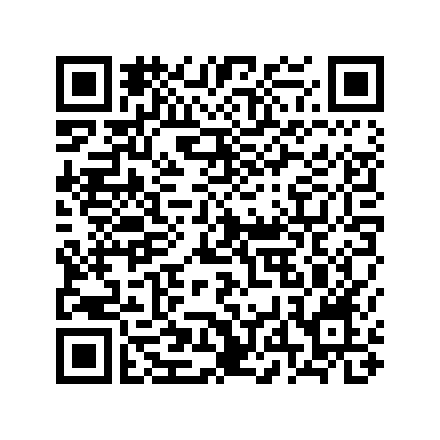

App pessoal de hábitos e produtividade para Android, feito por Daniel Angheben e usado por ele, pela família e por amigos.
Os dados ficam no seu aparelho. Entrar com a conta Google é opcional e serve para o backup no seu próprio Google Drive e, em breve, para a sincronização entre aparelhos.
O iCan é gratuito, sem anúncios e sem servidor. Se ele ajuda você e quiser contribuir, a doação é voluntária e feita por Pix. Ela não libera nenhum recurso extra.
Chave Pix (chave aleatória):
8ddce9da-e7a0-452c-8cfc-7ccb6493964b
Ou pelo QR Code:

Aponte a câmera do app do seu banco (Pix → Pagar com QR Code). O valor é você quem digita.
A doação é feita só por aqui, não dentro do app. Confira o nome do recebedor no app do seu banco antes de confirmar.
Contato: angheben.daniel@gmail.com